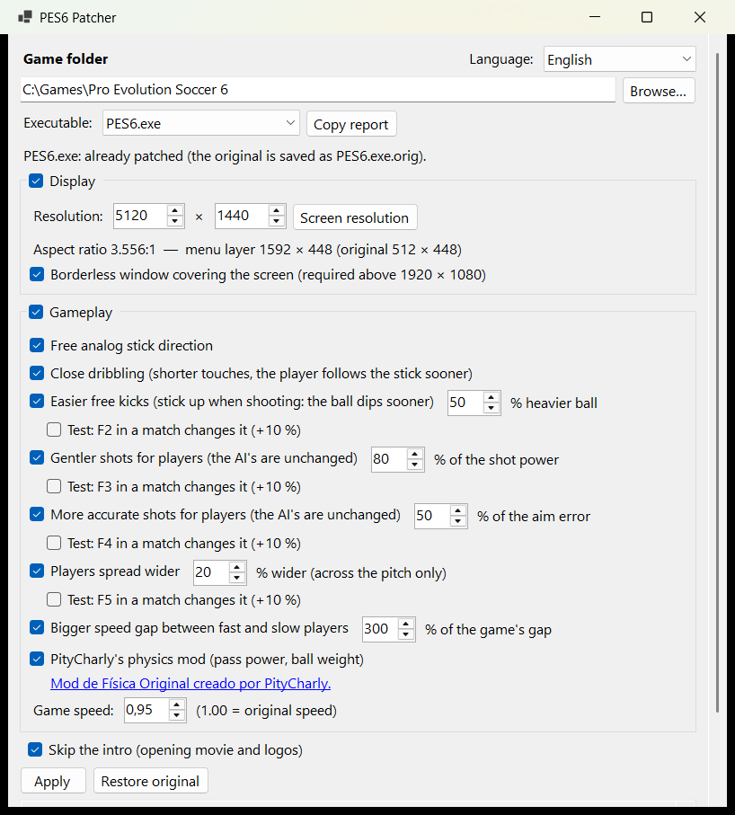

Pro Evolution Soccer 6 · PC
Widescreen and modern gameplay for PES 6
A patcher for Pro Evolution Soccer 6 on PC. It removes the stretching on 16:9, 21:9 and 32:9 screens, lets the player follow the stick's exact angle, and adds optional gameplay changes: close dribbling, easier free kicks, gentler and more accurate shots, and no intro at startup.

What it changes
Every option is separate and can be switched off. Most gameplay options are tuned and tested in matches; several have a test key to find the value you like.
Display
No more stretching
Menus, lists, the HUD (score, clock, radar, names) and the player cursor keep their original proportions, centred on the screen. The 3D image follows your aspect ratio through LOD Mixer.
16:9, 21:9, 32:9…
Above 1920 × 1080 (1440p and ultrawide), the game opens in a borderless window covering the whole screen.
Movement and dribbling
Free analog direction
The player follows the stick's precise angle instead of the 8 original directions, when running and when dribbling. The D-pad, the keyboard and the AI are unchanged.
Smaller dead zone
The game ignores the stick within 29 % of each axis, so the player keeps running along a line. The patcher lowers it to 18 % by default: a slight move now steers. Raise it if your pad drifts.
Close dribbling
Shorter dribble touches, scaled by the player's dribble accuracy: good dribblers keep the ball closer than weak ones. Switch it on and off with F1 in a match.
Turn faster with the ball
The game turns the player by 1.4° per frame, so a sharp touch sends the ball away. Now up to 22° per frame by default: he follows the ball.
Sharper sprint turns
The angle a sprinting dribbler can turn the ball per touch follows his dribble accuracy: star dribblers change direction sharply, weak ones keep the game's turns.
Shooting and set pieces
Easier free kicks
After a direct free kick shot with the left stick up, the ball is heavier until the next touch, so it dips sooner after the wall.
Gentler shots
The power above the lightest shot is brought down for the human teams. The AI's shots are unchanged.
Gentler headers
The height of the human teams' headers is brought down, so a header no longer flies over the bar. Their power is kept, and corners and the AI's headers are unchanged.
More accurate shots
The game's aim error is brought down for the human teams, following the shooter's shot accuracy: a top striker no longer sends the ball into the stands, an average one still misses. Lobs keep their height.
Lofted and through passes
Lofted passes: the press sets the distance, the stick the direction. Through passes are aimed less far ahead of the receiver, so they stay in play on the wings.
Team play
Players spread wider
Players placing themselves stand further from their team's centre across the pitch, leaving more room to dribble and pass.
Speed and acceleration gaps
In PES 6 the top speed stat is worth very little: a 97 is barely 7 % faster than a 68. These options make speed and acceleration count, so a fast winger can outrun a slower defender.
Pressing challenges
Pressing players try to win the ball from further, instead of running beside the carrier without ever challenging.
Higher defensive line
The game drops every back line about 11 m too deep, onto the edge of its box. The patcher takes that drop off: teams defend higher up the pitch.
And also
Skip the intro
No opening movie and no logos at startup. The language choice and the options file are kept.
Game speed
Adjustable through Kitserver's Speeder module.
PityCharly's physics mod
Optional, separate download: the patcher switches it on or off for you in kload.cfg.
Three presets, or tune everything
In Simple mode, a preset sets every gameplay option at once. Pro is the default, tested in matches; Normal gives more help and Hardcore less. Detailed mode shows every option and its value.
| Preset | Close dribbling | Sprint turns | Turn with the ball | Free kicks | Shot power | Aim error kept | Pass lead | Headers |
|---|---|---|---|---|---|---|---|---|
| Normal | 150 % | 90° | 22° | +70 % | 75 % | 30 % | 50 % | 60 % |
| Pro | 125 % | 90° | 22° | +50 % | 80 % | 50 % | 60 % | 70 % |
| Hardcore | 100 % | 45° | 11° | +30 % | 90 % | 75 % | 80 % | 80 % |
The other options are the same in every preset: free direction, stick dead zone 18 %, lofted passes, lobs 70 %, spread 20 %, challenge reach 180 %, higher defensive line, speed gap 300 %, bigger acceleration gap.
Install in a minute
You need PES 6 on PC with an unprotected executable (a no-DVD PES6.exe 1.00 / 1.10, or the exe of a community patch) and Kitserver 6 with the LOD Mixer and Speeder modules.
- Close PES 6 and
settings.exe. - Run
PES6Patcher.exe. It asks for administrator rights, because the game is usually installed inProgram Files. - Check the game folder (detected automatically), the executable and the resolution.
- Choose your options, then click Apply.
Your files stay safe
- Every modified file is backed up first (
PES6.exe.orig,kload.cfg.orig…). - Restore original puts everything back as it was before the first apply.
- The exe is always rebuilt from the original backup, so you can change options and apply again at any time.
- No game file is included: the patcher only modifies the installation on your machine.
After applying, do not reopen settings.exe: it does not know resolutions above 1920 × 1080 and would put the old value back. Stay in windowed mode in the game.
Which executables work?
The patch does not rely on fixed addresses. It finds every location by its surrounding code and cross-checks the result, so any build with the same game code is patched the same way, including the executables shipped by community patches.
Known to work
The patch has been checked in matches with this build.
Should work
Every location was found. Please tell us how it goes.
Nothing is changed
Some locations were not found, often because a DVD protection keeps parts of the code encrypted. Use a no-DVD executable.
Help confirm more builds: click Copy report in the patcher (file name, SHA-256, what can be applied) and share it in the Evo-Web thread or on GitHub.
Community
Questions, feedback and bug reports are welcome on the Evo-Web forum thread and in the GitHub issues. The app is available in English and French; translations are welcome as pull requests.
Credits
Mod de Física Original creado por PityCharly (pes6_game_physics_mod). Kitserver by juce and the Kitserver team.